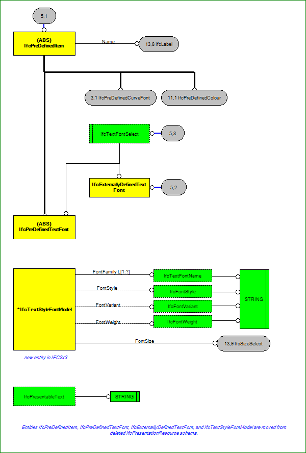

IfcPresentationAppearanceResource (5/13)


 IfcPresentationAppearanceResource (5/13) IfcPresentationAppearanceResource (5/13)
IfcPresentationAppearanceResource (5/13) IfcPresentationAppearanceResource (5/13)